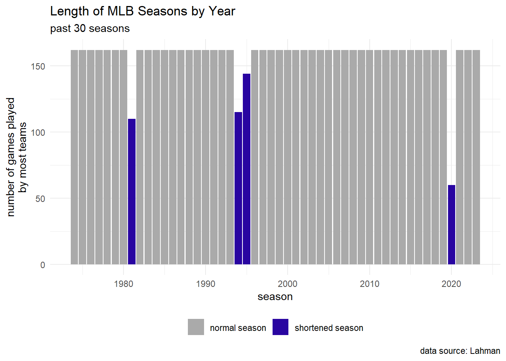
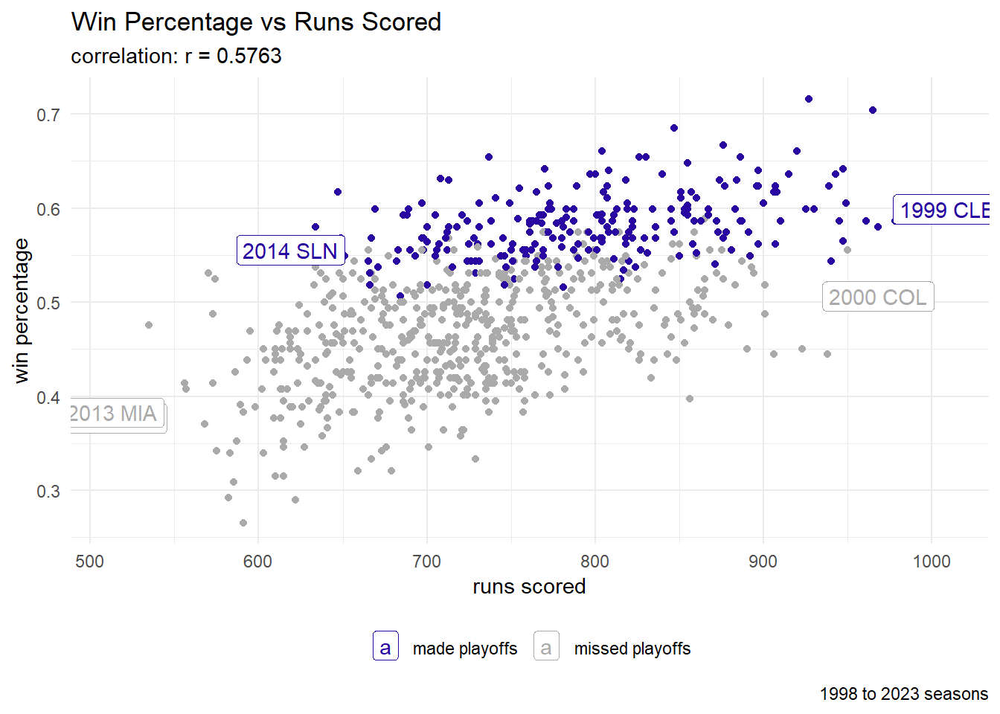
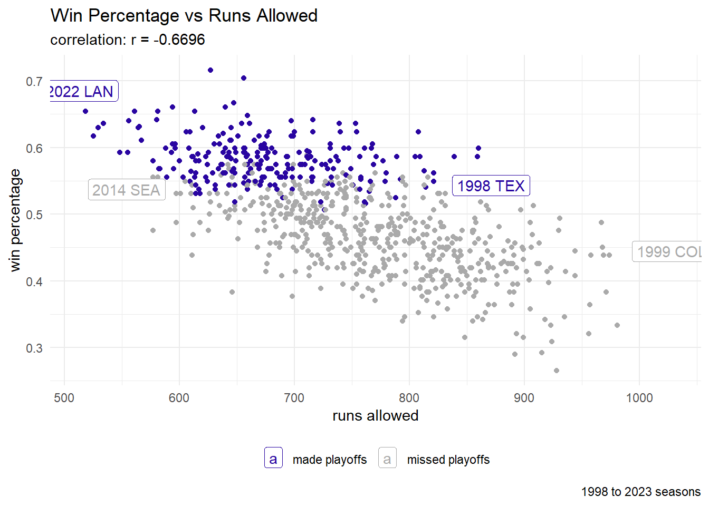
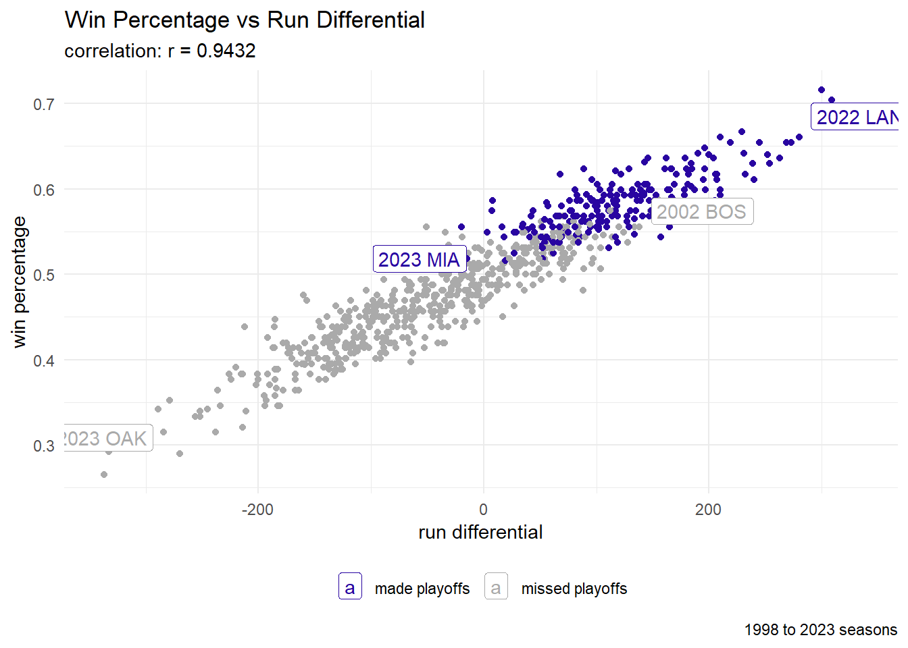
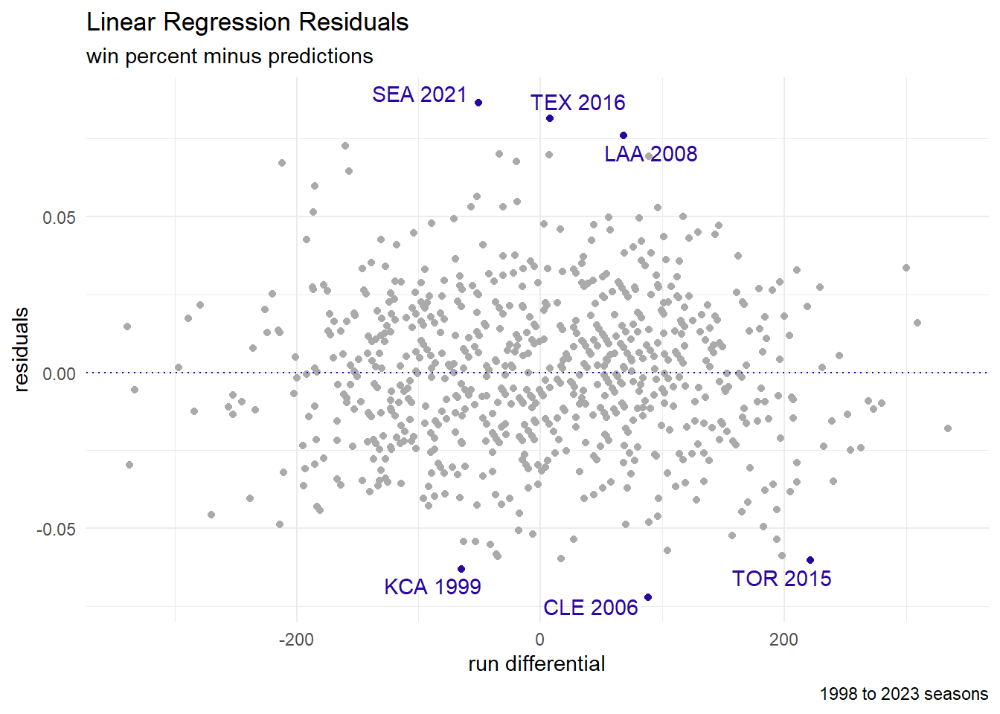
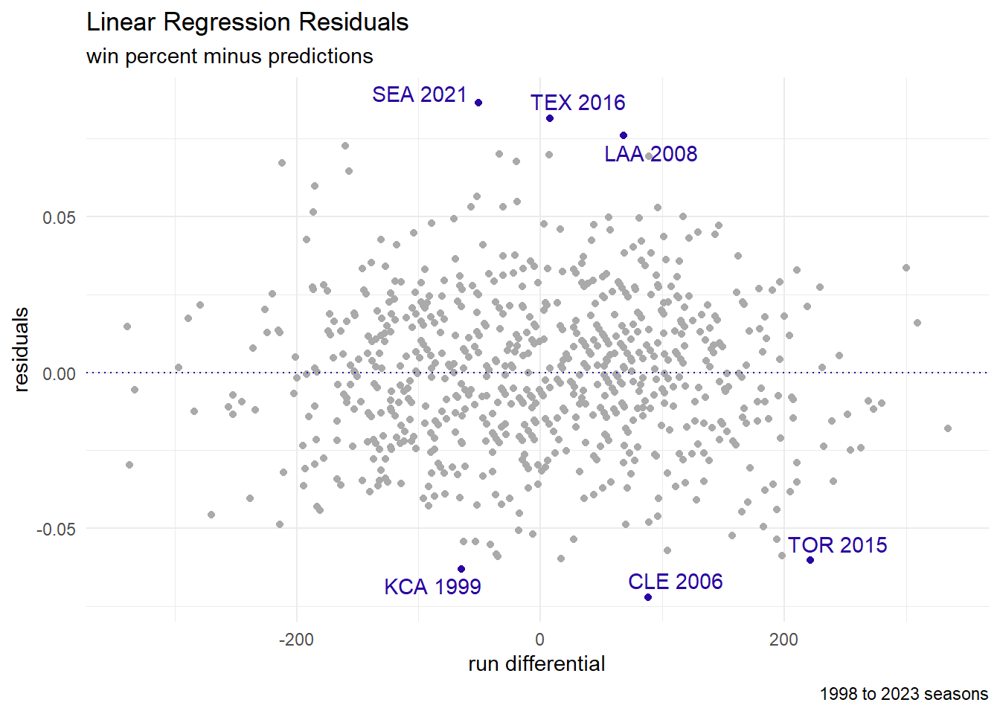
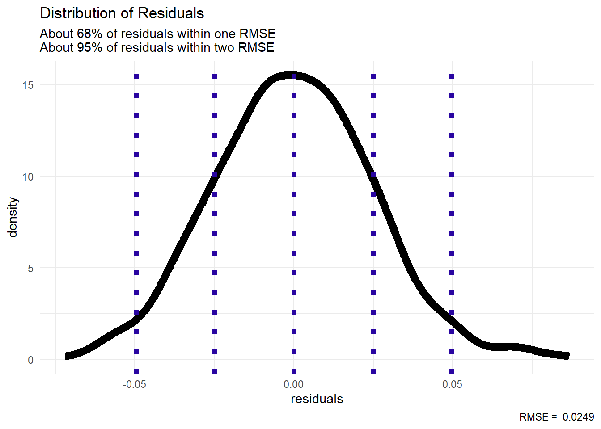
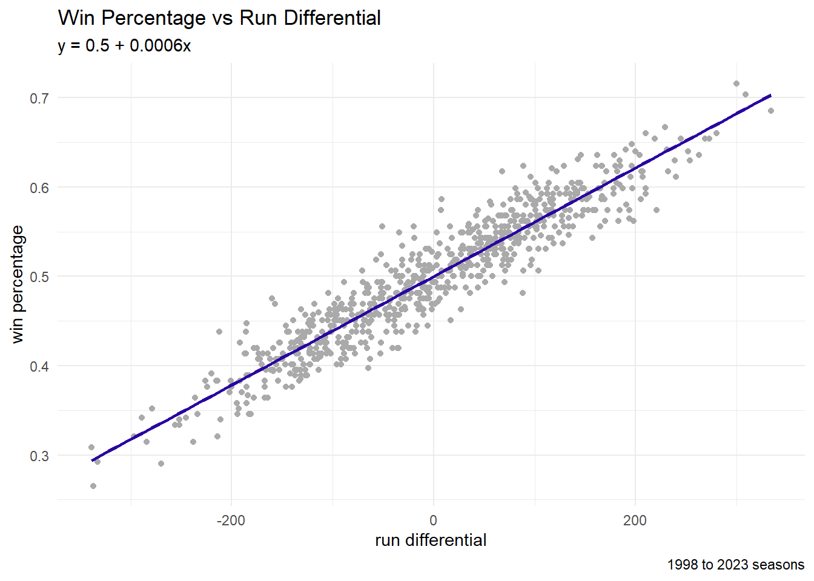
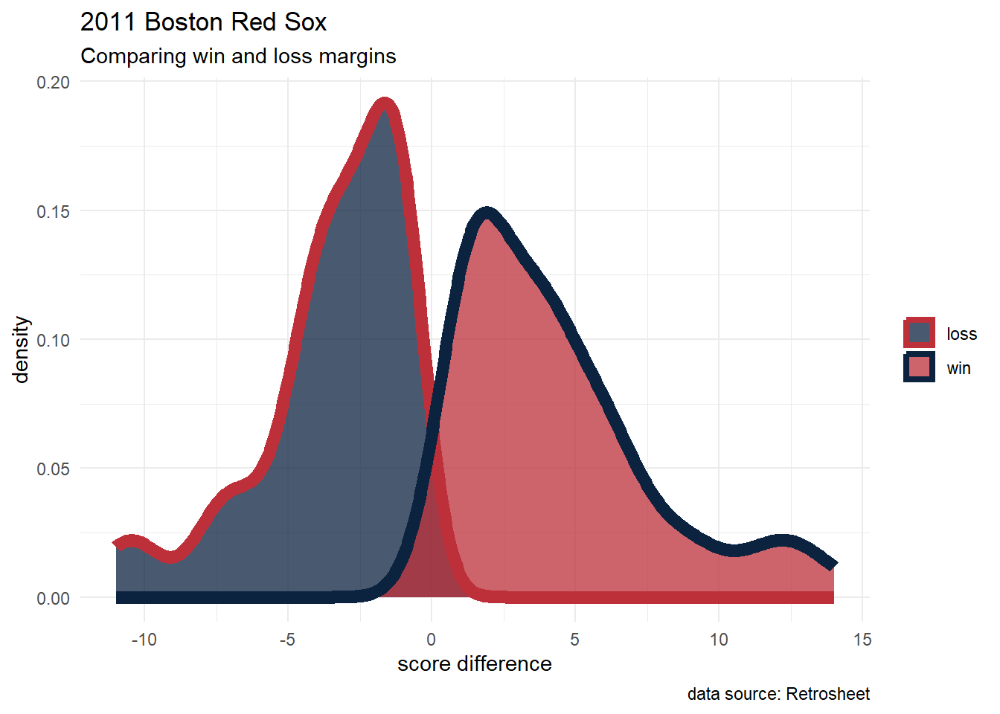
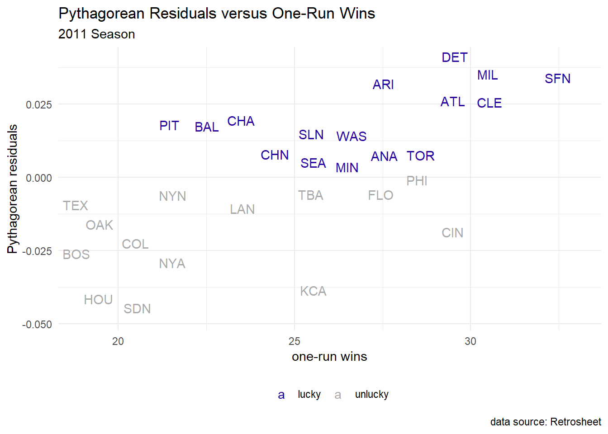

library("abdwr3edata")
library("ggrepel")
library("gt")
library("Lahman")
library("tidyverse")
crcblue <- "#2905A1"The Relation Between Runs and Wins
Learning objectives:
- Introduce sabermetrics
- Establish Pythagorean win-loss
- Implement linear regression models
Session Info
sessionInfo()R version 4.4.2 (2024-10-31 ucrt)
Platform: x86_64-w64-mingw32/x64
Running under: Windows 10 x64 (build 19045)
Matrix products: default
locale:
[1] LC_COLLATE=English_United States.utf8
[2] LC_CTYPE=English_United States.utf8
[3] LC_MONETARY=English_United States.utf8
[4] LC_NUMERIC=C
[5] LC_TIME=English_United States.utf8
time zone: America/New_York
tzcode source: internal
attached base packages:
[1] stats graphics grDevices utils datasets methods base
other attached packages:
[1] lubridate_1.9.4 forcats_1.0.0 stringr_1.5.1 dplyr_1.1.4
[5] purrr_1.0.4 readr_2.1.5 tidyr_1.3.1 tibble_3.2.1
[9] tidyverse_2.0.0 Lahman_12.0-0 gt_0.11.1 ggrepel_0.9.6
[13] ggplot2_3.5.2 abdwr3edata_0.0.3
loaded via a namespace (and not attached):
[1] generics_0.1.3 xml2_1.3.8 stringi_1.8.4 hms_1.1.3
[5] digest_0.6.37 magrittr_2.0.3 evaluate_1.0.3 grid_4.4.2
[9] timechange_0.3.0 RColorBrewer_1.1-3 fastmap_1.2.0 jsonlite_1.8.9
[13] promises_1.3.2 scales_1.4.0 cli_3.6.3 shiny_1.10.0
[17] rlang_1.1.5 withr_3.0.2 tools_4.4.2 tzdb_0.5.0
[21] httpuv_1.6.15 vctrs_0.6.5 R6_2.6.1 mime_0.12
[25] lifecycle_1.0.4 htmlwidgets_1.6.4 pkgconfig_2.0.3 pillar_1.10.2
[29] later_1.4.1 gtable_0.3.6 glue_1.8.0 Rcpp_1.0.12
[33] xfun_0.52 tidyselect_1.2.1 rstudioapi_0.17.1 knitr_1.50
[37] farver_2.1.2 xtable_1.8-4 htmltools_0.5.8.1 rmarkdown_2.29
[41] compiler_4.4.2 Recency
Following the textbook’s lead, let us find the most recent data in the Lahman package.
Teams |>
select(yearID, teamID, franchID, G, W, L, R, RA) |>
slice_tail(n = 5) yearID teamID franchID G W L R RA
1 2023 PIT PIT 162 76 86 692 790
2 2023 SDN SDP 162 82 80 752 648
3 2023 SFN SFG 162 79 83 674 719
4 2023 SLN STL 162 71 91 719 829
5 2023 WAS WSN 162 71 91 700 845Shortened Seasons
Some MLB seasons were shorter than others.

graph code
game_count_df <- Teams |>
select(yearID, G) |>
group_by(yearID, G) |>
mutate(obs_count = n()) |>
ungroup() |>
distinct() |>
# compute mode by year
group_by(yearID) |>
slice_max(order_by = obs_count, n = 1) |>
ungroup()game_count_df |>
filter(yearID > 1973) |>
mutate(season_bool = ifelse(G == 162, "normal season", "shortened season")) |>
ggplot(aes(x = yearID, y = G)) +
geom_bar(aes(fill = season_bool),
stat = "identity") +
labs(title = "Length of MLB Seasons by Year",
subtitle = "past 30 seasons",
caption = "data source: Lahman",
x = "season",
y = "number of games played\nby most teams") +
scale_fill_manual(values = c("#AAAAAA", "#2905A1")) +
theme_minimal() +
theme(legend.position = "bottom",
legend.title=element_blank())- 1981: strike-shortened season
- 1994: strike-shortened season
- 1995: strike-shortened season
- 2000: pandemic-shortened season
Fun Fact!
According to Redditor u/pnabf
The Braves, who have 4 championships in their franchise history, have never won a WS when playing 162 games in a season
Let us check that!
Teams |>
filter(franchID == "ATL") |>
filter(WSWin == "Y") |>
select(franchID, yearID, WSWin, G) franchID yearID WSWin G
1 ATL 1914 Y 158
2 ATL 1957 Y 155
3 ATL 1995 Y 144
4 ATL 2021 Y 161- 1995: strike-shortened season
- 2021: Sept 16 COL@ATL game was canceled due to rain
Rate Statistics
In baseball statistics, consider the use of both count statistics and rate statistics
- count statistics (for example): \(AB\), \(ER\), \(H\), \(IP\)
- rate statistics (for example):
\[BA = \frac{H}{AB}, \quad ERA = \frac{ER}{IP} \cdot 9\]
Win Percentage
ch4_data <- Teams |>
filter(yearID >= 1998, yearID != 2020) |>
select(yearID, lgID, teamID, G, W, L, R, RA, DivWin, WCWin) |>
# run differential
mutate(RD = R - RA) |>
# win percentage
mutate(Wpct = W / (W + L)) |>
# playoff win (Boolean)
mutate(playoff_bool = ifelse(
DivWin == "Y" | WCWin == "Y",
"made playoffs", "missed playoffs"
))Correlation
In short, we may want correlation values close to 1.0 or -1.0.
Offense

graph code
cor_value = cor(ch4_data$R, ch4_data$Wpct,
use = "pairwise.complete.obs")
subset_for_labels <- ch4_data |>
select(R, Wpct, playoff_bool, yearID, teamID) |>
group_by(playoff_bool) |>
mutate(highlight = ifelse(
R == max(R) | R == min(R),
1, 0
)) |>
ungroup() |>
filter(highlight == 1) |>
mutate(year_team = paste(yearID, teamID))
ch4_data |>
ggplot(aes(x = R, y = Wpct)) +
geom_point(aes(color = playoff_bool)) +
geom_label(aes(x = R, y = Wpct, color = playoff_bool, label = year_team),
data = subset_for_labels) +
labs(title = "Win Percentage vs Runs Scored",
subtitle = paste0("correlation: r = ", round(cor_value, 4)),
caption = "1998 to 2023 seasons",
x = "runs scored",
y = "win percentage") +
scale_color_manual(values = c("#2905A1", "#AAAAAA")) +
theme_minimal() +
theme(legend.position = "bottom",
legend.title=element_blank())Defense

graph code
cor_value = cor(ch4_data$RA, ch4_data$Wpct,
use = "pairwise.complete.obs")
subset_for_labels <- ch4_data |>
select(RA, Wpct, playoff_bool, yearID, teamID) |>
group_by(playoff_bool) |>
mutate(highlight = ifelse(
RA == max(RA) | RA == min(RA),
1, 0
)) |>
ungroup() |>
filter(highlight == 1) |>
mutate(year_team = paste(yearID, teamID))
ch4_data |>
ggplot(aes(x = RA, y = Wpct)) +
geom_point(aes(color = playoff_bool)) +
geom_label(aes(x = RA, y = Wpct, color = playoff_bool, label = year_team),
data = subset_for_labels) +
labs(title = "Win Percentage vs Runs Allowed",
subtitle = paste0("correlation: r = ", round(cor_value, 4)),
caption = "1998 to 2023 seasons",
x = "runs allowed",
y = "win percentage") +
scale_color_manual(values = c("#2905A1", "#AAAAAA")) +
theme_minimal() +
theme(legend.position = "bottom",
legend.title=element_blank())Run Differential

graph code
cor_value = cor(ch4_data$RD, ch4_data$Wpct,
use = "pairwise.complete.obs")
subset_for_labels <- ch4_data |>
select(RD, Wpct, playoff_bool, yearID, teamID) |>
group_by(playoff_bool) |>
mutate(highlight = ifelse(
RD == max(RD) | RD == min(RD),
1, 0
)) |>
ungroup() |>
filter(highlight == 1) |>
mutate(year_team = paste(yearID, teamID))
ch4_data |>
ggplot(aes(x = RD, y = Wpct)) +
geom_point(aes(color = playoff_bool)) +
geom_label(aes(x = RD, y = Wpct, color = playoff_bool, label = year_team),
data = subset_for_labels) +
labs(title = "Win Percentage vs Run Differential",
subtitle = paste0("correlation: r = ", round(cor_value, 4)),
caption = "1998 to 2023 seasons",
x = "run differential",
y = "win percentage") +
scale_color_manual(values = c("#2905A1", "#AAAAAA")) +
theme_minimal() +
theme(legend.position = "bottom",
legend.title=element_blank())Linear Regression
We will proceed by exploring a possible relationship between the run differential and the win percentage.
\[W_{\text{pct}} = \beta_{0} + \beta_{1}*RD + \epsilon\]
In R, we make a linear model using the lm function.
lin_fit <- lm(Wpct ~ RD, data = ch4_data)
lin_fit #print coefficients
Call:
lm(formula = Wpct ~ RD, data = ch4_data)
Coefficients:
(Intercept) RD
0.4999841 0.0006081 In ggplot2, we visualize the best-fit line using geom_smooth (with the method = 'lm' parameter).

graph code
ch4_data |>
ggplot(aes(x = RD, y = Wpct)) +
geom_point(color = "#AAAAAA") +
geom_smooth(color = "#2905A1",
formula = "y ~ x",
method = "lm",
se = FALSE) +
labs(title = "Win Percentage vs Run Differential",
subtitle = "y = 0.5 + 0.0006x",
caption = "1998 to 2023 seasons",
x = "run differential",
y = "win percentage") +
theme_minimal() +
theme(legend.position = "bottom",
legend.title=element_blank())\[\beta_{0} = 0.5\]
- \(RD = 0 \rightarrow W_{\text{pct}} = 0.5\)
- Over 162 games: 81 wins
\[\beta_{1} = 0.0006\]
- \(RD = +10 \rightarrow W_{\text{pct}} = 0.506\)
- Over 162 games: 82 wins
Residuals
Residuals are the differences between the predictions (aka fitted data) and the true values (aka response values).
ch4_data <- ch4_data |>
mutate(preds = predict(lin_fit, newdata = ch4_data),
resid = Wpct - preds)
graph code

| Residuals | |||||
|---|---|---|---|---|---|
| top 3 and bottom 3 | |||||
| teamID | yearID | Wpct | preds | resid | desc |
| SEA | 2021 | 0.56 | 0.47 | 0.09 | performed better |
| TEX | 2016 | 0.59 | 0.50 | 0.08 | performed better |
| LAA | 2008 | 0.62 | 0.54 | 0.08 | performed better |
| TOR | 2015 | 0.57 | 0.63 | −0.06 | performed worse |
| KCA | 1999 | 0.40 | 0.46 | −0.06 | performed worse |
| CLE | 2006 | 0.48 | 0.55 | −0.07 | performed worse |
table code
oddities |>
select(teamID, yearID, Wpct, preds, resid) |>
mutate(desc = ifelse(resid > 0, "performed better", "performed worse")) |>
gt() |>
cols_align(align = "center") |>
fmt_number(columns = c(Wpct, preds, resid),
decimals = 2) |>
tab_header(title = "Residuals",
subtitle = "top 3 and bottom 3")Balance
For linear models (through least-squares optimization), the average of the residuals should be zero:
mean(ch4_data$resid)[1] 4.420171e-16RMSE
The root mean square error acts similarly to a standard deviation to help measure along the variation of our data.

graph code
rmse <- sqrt(mean(ch4_data$resid^2))
ch4_data |>
ggplot(aes(x = resid)) +
geom_density(linewidth = 3) +
geom_vline(color = "#2905A1",
linetype = 3,
linewidth = 2,
xintercept = c(-2*rmse, -1*rmse, 0, rmse, 2*rmse)) +
labs(title = "Distribution of Residuals",
subtitle = "About 68% of residuals are within one RMSE\nAbout 95% of residuals are within two RMSE",
caption = paste("RMSE = ", round(rmse, 4)),
x = "residuals") +
theme_minimal()Discussion

- What about extreme performances?
- Should we relate count statistics to a rate statistic?
- Can we make predictions during the season?
Pythagorean Formula
Bill James, regarded as the godfather of sabermetrics, empirically derived the following non-linear formula to estimate winning percentage, called the Pythagorean expectation.
\[\widehat{W_{\text{pct}}} = \frac{R^{2}}{R^{2} + {RA^{2}}}\]
ch4_data <- ch4_data |>
mutate(Wpct_pyt = R^2 / (R^2 + RA^2),
resid_pyt = Wpct - Wpct_pyt)
# RMSE with exponent of 2
sqrt(mean(ch4_data$resid_pyt^2))[1] 0.02570405What should the exponent be?
\[\frac{W}{W+L} = W_{\text{pct}} \approx \widehat{W_{\text{pct}}} = \frac{R^{k}}{R^{k} + {RA^{k}}}\]
algebra
\[\begin{array}{rcl} \frac{W}{W+L} = W_{\text{pct}} & \approx & \widehat{W_{\text{pct}}} = \frac{R^{k}}{R^{k} + {RA^{k}}} \\ \frac{W}{W+L} & \approx & \frac{R^{k}}{R^{k} + {RA^{k}}} \\ WR^{k} + WRA^{k} & \approx & WR^{k} + LR^{k} \\ WRA^{k} & \approx & LR^{k} \\ \frac{W}{L}\cdot RA^{k} & \approx & R^{k} \\ \frac{W}{L} & \approx & \frac{R^{k}}{RA^{k}} \\ \frac{W}{L} & \approx & \left(\frac{R}{RA}\right)^{k} \\ \ln\frac{W}{L} & \approx & \ln\left(\frac{R}{RA}\right)^{k} \\ \end{array}\]
\[\ln\frac{W}{L} \approx k\ln\left(\frac{R}{RA}\right)\]
ch4_data <- ch4_data |>
mutate(logWratio = log(W/L),
logRratio = log(R/RA))
pyt_fit <- lm(logWratio ~ 0 + logRratio, data = ch4_data)
pyt_fit$coefficientslogRratio
1.834988 ch4_data <- ch4_data |>
mutate(Wpct_pyt = R^1.835 / (R^1.835 + RA^1.835),
resid_pyt = Wpct - Wpct_pyt)
# RMSE with exponent of 1.835
sqrt(mean(ch4_data$resid_pyt^2))[1] 0.02494779Luck
We can find the expected number of wins for a full season by multiplying the estimated win percentage (from the Pythagorean formula with an exponent of 1.835) by 162 games.
| 2011 Season | |||||
|---|---|---|---|---|---|
| Performance vs Pythag Expectation | |||||
| teamID | W | W_pyt | playoff_bool | diff | desc |
| DET | 95 | 88.5 | made playoffs | 6.5 | lucky |
| SFN | 86 | 80.0 | missed playoffs | 6.0 | lucky |
| MIL | 96 | 90.1 | made playoffs | 5.9 | lucky |
| ARI | 94 | 88.3 | made playoffs | 5.7 | lucky |
| CLE | 80 | 75.3 | missed playoffs | 4.7 | lucky |
| ATL | 89 | 85.3 | missed playoffs | 3.7 | lucky |
| CHA | 79 | 75.3 | missed playoffs | 3.7 | lucky |
| PIT | 72 | 69.6 | missed playoffs | 2.4 | lucky |
| BAL | 69 | 66.7 | missed playoffs | 2.3 | lucky |
| SLN | 90 | 88.1 | made playoffs | 1.9 | lucky |
| TOR | 81 | 79.2 | missed playoffs | 1.8 | lucky |
| WAS | 80 | 78.8 | missed playoffs | 1.2 | lucky |
| LAA | 86 | 84.9 | missed playoffs | 1.1 | lucky |
| MIN | 63 | 61.9 | missed playoffs | 1.1 | lucky |
| CHN | 71 | 70.3 | missed playoffs | 0.7 | lucky |
| SEA | 67 | 66.7 | missed playoffs | 0.3 | lucky |
| FLO | 72 | 72.4 | missed playoffs | −0.4 | unlucky |
| TBA | 91 | 91.4 | made playoffs | −0.4 | unlucky |
| PHI | 102 | 102.6 | made playoffs | −0.6 | unlucky |
| NYN | 77 | 78.6 | missed playoffs | −1.6 | unlucky |
| TEX | 96 | 98.1 | made playoffs | −2.1 | unlucky |
| LAN | 82 | 84.8 | missed playoffs | −2.8 | unlucky |
| OAK | 74 | 77.2 | missed playoffs | −3.2 | unlucky |
| CIN | 79 | 82.5 | missed playoffs | −3.5 | unlucky |
| BOS | 90 | 93.7 | missed playoffs | −3.7 | unlucky |
| COL | 73 | 77.2 | missed playoffs | −4.2 | unlucky |
| NYA | 97 | 101.2 | made playoffs | −4.2 | unlucky |
| HOU | 56 | 62.2 | missed playoffs | −6.2 | unlucky |
| KCA | 71 | 77.8 | missed playoffs | −6.8 | unlucky |
| SDN | 71 | 78.8 | missed playoffs | −7.8 | unlucky |
table code
ch4_data |>
filter(yearID == 2011) |>
mutate(W_pyt = Wpct_pyt*162) |>
select(teamID, W, W_pyt, playoff_bool) |>
mutate(diff = W - W_pyt) |>
mutate(desc = ifelse(diff > 0,
"lucky", "unlucky")) |>
arrange(desc(diff)) |>
gt() |>
cols_align(align = "center") |>
data_color(columns = diff,
palette = "viridis") |>
data_color(columns = playoff_bool,
palette = "viridis",
reverse = TRUE) |>
fmt_number(columns = c(W_pyt, diff),
decimals = 1) |>
tab_header(title = "2011 Season",
subtitle = "Performance vs Pythag Expectation")| 2023 Season | |||||
|---|---|---|---|---|---|
| Performance vs Pythag Expectation | |||||
| teamID | W | W_pyt | playoff_bool | diff | desc |
| MIA | 84 | 74.9 | made playoffs | 9.1 | lucky |
| BAL | 101 | 93.8 | made playoffs | 7.2 | lucky |
| DET | 78 | 72.6 | missed playoffs | 5.4 | lucky |
| PIT | 76 | 71.2 | missed playoffs | 4.8 | lucky |
| CIN | 82 | 77.5 | missed playoffs | 4.5 | lucky |
| ARI | 84 | 79.5 | made playoffs | 4.5 | lucky |
| WAS | 71 | 67.1 | missed playoffs | 3.9 | lucky |
| NYA | 82 | 78.3 | missed playoffs | 3.7 | lucky |
| SFN | 79 | 76.2 | missed playoffs | 2.8 | lucky |
| ATL | 104 | 101.3 | made playoffs | 2.7 | lucky |
| MIL | 92 | 89.7 | made playoffs | 2.3 | lucky |
| OAK | 50 | 48.9 | missed playoffs | 1.1 | lucky |
| PHI | 90 | 88.9 | made playoffs | 1.1 | lucky |
| SLN | 71 | 70.5 | missed playoffs | 0.5 | lucky |
| LAA | 73 | 72.5 | missed playoffs | 0.5 | lucky |
| TOR | 89 | 88.8 | made playoffs | 0.2 | lucky |
| LAN | 100 | 99.9 | made playoffs | 0.1 | lucky |
| CHA | 61 | 61.2 | missed playoffs | −0.2 | unlucky |
| TBA | 99 | 99.8 | made playoffs | −0.8 | unlucky |
| CLE | 76 | 77.2 | missed playoffs | −1.2 | unlucky |
| COL | 59 | 60.4 | missed playoffs | −1.4 | unlucky |
| BOS | 78 | 80.6 | missed playoffs | −2.6 | unlucky |
| SEA | 88 | 91.3 | missed playoffs | −3.3 | unlucky |
| HOU | 90 | 93.5 | made playoffs | −3.5 | unlucky |
| NYN | 75 | 79.8 | missed playoffs | −4.8 | unlucky |
| TEX | 90 | 96.2 | made playoffs | −6.2 | unlucky |
| MIN | 87 | 93.2 | made playoffs | −6.2 | unlucky |
| CHN | 83 | 90.2 | missed playoffs | −7.2 | unlucky |
| KCA | 56 | 63.5 | missed playoffs | −7.5 | unlucky |
| SDN | 82 | 92.0 | missed playoffs | −10.0 | unlucky |
Case Studies
2011 Red Sox
BOS_2011 <- retro_gl_2011 |> #Retrosheet data (via abdwr3edata)
filter(HomeTeam == "BOS" | VisitingTeam == "BOS") |>
select(VisitingTeam, HomeTeam, VisitorRunsScored, HomeRunsScore) |>
mutate(ScoreDiff = ifelse(HomeTeam == "BOS",
HomeRunsScore - VisitorRunsScored,
VisitorRunsScored - HomeRunsScore),
W_bool = ifelse(ScoreDiff > 0, "win", "loss"))
graph code
BOS_2011 |>
ggplot(aes(x = ScoreDiff)) +
geom_density(aes(color = W_bool,
fill = W_bool),
alpha = 0.75,
linewidth = 3) +
labs(title = "2011 Boston Red Sox",
subtitle = "Comparing win and loss margins",
caption = "data source: Retrosheet",
x = "score difference") +
scale_color_manual(values = c("#BD3039", "#0C2340")) +
scale_fill_manual(values = c("#0C2340", "#BD3039")) +
theme_minimal() +
theme(legend.position = "right",
legend.title=element_blank())The 2011 Red Sox had their victories decided by a larger margin than their losses (4.3 vs -3.5 runs on average), leading to their underperformance of the Pythagorean prediction
Clutch Performance
Here, we are tracking performance in games won with a difference of just one run.

graph code
one_run_wins <- retro_gl_2011 |>
select(VisitingTeam, HomeTeam, VisitorRunsScored, HomeRunsScore) |>
mutate(winner = ifelse(HomeRunsScore > VisitorRunsScored, HomeTeam, VisitingTeam),
diff = abs(VisitorRunsScored - HomeRunsScore)
) |>
filter(diff == 1) |>
group_by(winner) |>
summarize(one_run_w = n())
teams2011 <- ch4_data |>
filter(yearID == 2011) |>
mutate(teamID = if_else(teamID == "LAA", "ANA", as.character(teamID))
) |>
inner_join(one_run_wins, by = c("teamID" = "winner"))
teams2011 |>
mutate(luck = ifelse(resid_pyt > 0, "lucky", "unlucky")) |>
ggplot(aes(x = one_run_w, y = resid_pyt)) +
#geom_point() +
geom_text_repel(aes(color = luck, label = teamID)) +
xlab("One run wins") + ylab("Pythagorean residuals") +
labs(title = "Pythagorean Residuals versus One-Run Wins",
subtitle = "2011 Season",
caption = "data source: Retrosheet",
x = "one-run wins") +
scale_color_manual(values = c("#2905A1", "#AAAAAA")) +
theme_minimal() +
theme(legend.position = "bottom",
legend.title=element_blank())Great Relievers
- \(GR > 50\)
- \(ERA < 2.50\)
We obtain summary statistics on the Pythagorean residuals
Min. 1st Qu. Median Mean 3rd Qu. Max.
-0.0617 -0.0086 0.0070 0.0078 0.0227 0.0816 Over a 162-game season, a top reliever provides
\[0.0078*162 \approx 1.2636 \text{ wins}\]
How Many Runs for a Win?
“ten-runs-equal-one-win” rule of thumb
Earlier:
\[\widehat{W_{\text{pct}}} = 0.5 + 0.0006*RD\]
- \(RD = 0 \rightarrow W_{\text{pct}} = 0.5\)
- Over 162 games: 81 wins
- \(RD = +10 \rightarrow W_{\text{pct}} = 0.506\)
- Over 162 games: 82 wins
Calculus
Ralph Caola derived the number of extra runs needed to get an extra win in a more rigorous way using calculus
\[W = \frac{G \cdot R^{2}}{R^{2} + RA^{2}}\]
$$ \[\begin{array}{rcl} \frac{\partial W}{\partial R} & = & \frac{\partial}{\partial R}\frac{G \cdot R^{2}}{R^{2} + RA^{2}} \\ ~ & = & \frac{2 \cdot G \cdot R \cdot RA^{2}}{(R^{2} + RA^{2})^{2}} \\ \end{array}\]$$
calculus in R!
D(expression(G * R ^ 2 / (R ^ 2 + RA ^ 2)), "R")G * (2 * R)/(R^2 + RA^2) - G * R^2 * (2 * R)/(R^2 + RA^2)^2Incremental Runs per Win
\[IR/W = \frac{(R^{2} + RA^{2})^{2}}{2 \cdot G \cdot R \cdot RA^{2}}\]
We can make a user-defined function (and assuming rate statistics “runs per game” and “runs allowed per game” to remove \(G\)):
IR <- function(RS = 5, RA = 5) {
(RS ^ 2 + RA ^ 2)^2 / (2 * RS * RA ^ 2)
}With two inputs, we will use a grid search to express different numbers of runs scored and runs allowed.
ir_table <- tidyr::expand_grid(RS = 1:7, RA = 1:7) |>
mutate(IRW = IR(RS, RA)) |>
pivot_wider(names_from = RA, values_from = "IRW",
names_prefix = "RA=")| Incremental runs per win | |||||||
|---|---|---|---|---|---|---|---|
| as posed by Ralph Caola | |||||||
| RS | RA=1 | RA=2 | RA=3 | RA=4 | RA=5 | RA=6 | RA=7 |
| 1 | 2.0 | 3.1 | 5.6 | 9.0 | 13.5 | 19.0 | 25.5 |
| 2 | 6.2 | 4.0 | 4.7 | 6.2 | 8.4 | 11.1 | 14.3 |
| 3 | 16.7 | 7.0 | 6.0 | 6.5 | 7.7 | 9.4 | 11.4 |
| 4 | 36.1 | 12.5 | 8.7 | 8.0 | 8.4 | 9.4 | 10.8 |
| 5 | 67.6 | 21.0 | 12.8 | 10.5 | 10.0 | 10.3 | 11.2 |
| 6 | 114.1 | 33.3 | 18.8 | 14.1 | 12.4 | 12.0 | 12.3 |
| 7 | 178.6 | 50.2 | 26.7 | 18.9 | 15.6 | 14.3 | 14.0 |
table code
ir_table |>
gt() |>
cols_align(align = "center") |>
data_color(columns = -RS,
palette = "viridis") |>
fmt_number(columns = -RS,
decimals = 1) |>
tab_header(title = "Incremental runs per win",
subtitle = "as posed by Ralph Caola")Exercises
Exercise 4.1
Relationship Between Winning Percentage and Run Differential Across Decades
Section 4.3 used a simple linear model to predict a team’s winning percentage based on its run differential. This model was fit using team data since the 2001 season.
- Refit this linear model using data from the seasons 1961–1970, the seasons 1971–1980, the seasons 1981–1990, and the seasons 1991–2000.
- Compare across the five decades the predicted winning percentage for a team with a run differential of 10 runs.
| Run Differential: +10 | |||
|---|---|---|---|
| over the decades | |||
| decade | beta_0 | beta_1 | RD_10 |
| 1910 to 1919 | 0.49996 | 0.00076 | 0.50754 |
| 1920 to 1929 | 0.49999 | 0.00063 | 0.50629 |
| 1930 to 1939 | 0.49988 | 0.00062 | 0.50605 |
| 1940 to 1949 | 0.49985 | 0.00066 | 0.50643 |
| 1950 to 1959 | 0.49997 | 0.00064 | 0.50632 |
| 1960 to 1969 | 0.49993 | 0.00071 | 0.50704 |
| 1970 to 1979 | 0.50000 | 0.00064 | 0.50639 |
| 1980 to 1989 | 0.49993 | 0.00071 | 0.50701 |
| 1990 to 1999 | 0.50000 | 0.00063 | 0.50632 |
| 2000 to 2009 | 0.49999 | 0.00062 | 0.50621 |
| 2010 to 2019 | 0.49999 | 0.00061 | 0.50607 |
| 2020 to 2023 | 0.49998 | 0.00063 | 0.50624 |
table code
ch4_1_data <- Teams |>
select(yearID, teamID, W, L, R, RA) |>
mutate(RD = R - RA) |>
mutate(Wpct = W / (W + L))
fit_1910s <- lm(Wpct ~ RD, data = ch4_1_data |> filter(yearID >= 1910 & yearID < 1920))
fit_1920s <- lm(Wpct ~ RD, data = ch4_1_data |> filter(yearID >= 1920 & yearID < 1930))
fit_1930s <- lm(Wpct ~ RD, data = ch4_1_data |> filter(yearID >= 1930 & yearID < 1940))
fit_1940s <- lm(Wpct ~ RD, data = ch4_1_data |> filter(yearID >= 1940 & yearID < 1950))
fit_1950s <- lm(Wpct ~ RD, data = ch4_1_data |> filter(yearID >= 1950 & yearID < 1960))
fit_1960s <- lm(Wpct ~ RD, data = ch4_1_data |> filter(yearID >= 1960 & yearID < 1970))
fit_1970s <- lm(Wpct ~ RD, data = ch4_1_data |> filter(yearID >= 1970 & yearID < 1980))
fit_1980s <- lm(Wpct ~ RD, data = ch4_1_data |> filter(yearID >= 1980 & yearID < 1990))
fit_1990s <- lm(Wpct ~ RD, data = ch4_1_data |> filter(yearID >= 1990 & yearID < 2000))
fit_2000s <- lm(Wpct ~ RD, data = ch4_1_data |> filter(yearID >= 2000 & yearID < 2010))
fit_2010s <- lm(Wpct ~ RD, data = ch4_1_data |> filter(yearID >= 2010 & yearID < 2020))
fit_2020s <- lm(Wpct ~ RD, data = ch4_1_data |> filter(yearID >= 2020))
pred_1910s_R10 <- predict(fit_1910s, newdata = data.frame(RD = 10))
pred_1920s_R10 <- predict(fit_1920s, newdata = data.frame(RD = 10))
pred_1930s_R10 <- predict(fit_1930s, newdata = data.frame(RD = 10))
pred_1940s_R10 <- predict(fit_1940s, newdata = data.frame(RD = 10))
pred_1950s_R10 <- predict(fit_1950s, newdata = data.frame(RD = 10))
pred_1960s_R10 <- predict(fit_1960s, newdata = data.frame(RD = 10))
pred_1970s_R10 <- predict(fit_1970s, newdata = data.frame(RD = 10))
pred_1980s_R10 <- predict(fit_1980s, newdata = data.frame(RD = 10))
pred_1990s_R10 <- predict(fit_1990s, newdata = data.frame(RD = 10))
pred_2000s_R10 <- predict(fit_2000s, newdata = data.frame(RD = 10))
pred_2010s_R10 <- predict(fit_2010s, newdata = data.frame(RD = 10))
pred_2020s_R10 <- predict(fit_2020s, newdata = data.frame(RD = 10))
starts <- seq(1910, 2020, by = 10)
ends <- c(seq(1919, 2019, by = 10), 2023)
decade <- paste(starts, "to", ends)
beta_0 <- c(
fit_1910s$coefficients[1],
fit_1920s$coefficients[1],
fit_1930s$coefficients[1],
fit_1940s$coefficients[1],
fit_1950s$coefficients[1],
fit_1960s$coefficients[1],
fit_1970s$coefficients[1],
fit_1980s$coefficients[1],
fit_1990s$coefficients[1],
fit_2000s$coefficients[1],
fit_2010s$coefficients[1],
fit_2020s$coefficients[1])
beta_1 <- c(
fit_1910s$coefficients[2],
fit_1920s$coefficients[2],
fit_1930s$coefficients[2],
fit_1940s$coefficients[2],
fit_1950s$coefficients[2],
fit_1960s$coefficients[2],
fit_1970s$coefficients[2],
fit_1980s$coefficients[2],
fit_1990s$coefficients[2],
fit_2000s$coefficients[2],
fit_2010s$coefficients[2],
fit_2020s$coefficients[2])
RD_10 <- c(
pred_1910s_R10,
pred_1920s_R10,
pred_1930s_R10,
pred_1940s_R10,
pred_1950s_R10,
pred_1960s_R10,
pred_1970s_R10,
pred_1980s_R10,
pred_1990s_R10,
pred_2000s_R10,
pred_2010s_R10,
pred_2020s_R10)
df_4_1 <- data.frame(decade, beta_0, beta_1, RD_10)
df_4_1 |>
gt() |>
cols_align(align = "center") |>
fmt_number(columns = -decade,
decimals = 5) |>
tab_header(title = "Run Differential: +10",
subtitle = "over the decades") |>
tab_style(
style = list(
cell_fill(color = "dodgerblue"),
cell_text(weight = "bold")),
locations = cells_body(columns = RD_10))Exercise 4.2
Pythagorean Residuals for Poor and Great Teams in the 19th Century
As baseball was evolving into its modern form, 19th century leagues often featured abysmal teams that did not even succeed in finishing their season, as well as some dominant clubs.
- Fit a Pythagorean formula model to the run differential, win-loss data for teams who played in the 19th century.
- By inspecting the residual plot of your fitted model from (a), did the great and poor teams in the 19th century do better or worse than one would expect on the basis of their run differentials?
\[\widehat{W_{\text{pct}}} = \frac{R^{1.931}}{R^{1.931} + {RA^{1.931}}}\]
R code
ch4_2_data <- Teams |>
filter(yearID < 1900) |>
select(yearID, franchID, W, L, R, RA) |>
mutate(RD = R - RA) |>
mutate(Wpct = W / (W + L)) |>
mutate(logWratio = log(W/L),
logRratio = log(R/RA))
# handle winless teams!
ch4_2_data$logWratio[ch4_2_data$W == 0] <- -3.1415
pyt_fit <- lm(logWratio ~ 0 + logRratio, data = ch4_2_data)
pyt_fit$coefficientslogRratio
1.931166 ch4_2_data <- ch4_2_data |>
mutate(Wpct_pyt = R^1.931 / (R^1.931 + RA^1.931),
resid_pyt = Wpct - Wpct_pyt)| 1800s Baseball | |||||||||
|---|---|---|---|---|---|---|---|---|---|
| Best Teams | |||||||||
| yearID | franchName | W | L | R | RA | Wpct | Wpct_pyt | resid_pyt | desc |
| 1875 | Boston Red Stockings | 71 | 8 | 831 | 343 | 0.8987 | 0.8467 | 0.0521 | lucky |
| 1884 | St. Louis Maroons | 94 | 19 | 887 | 429 | 0.8319 | 0.8026 | 0.0293 | lucky |
| 1872 | Boston Red Stockings | 39 | 8 | 521 | 236 | 0.8298 | 0.8219 | 0.0079 | lucky |
| 1880 | Chicago Cubs | 67 | 17 | 538 | 317 | 0.7976 | 0.7352 | 0.0624 | lucky |
| 1876 | Chicago Cubs | 52 | 14 | 624 | 257 | 0.7879 | 0.8472 | −0.0593 | unlucky |
| 1885 | Chicago Cubs | 87 | 25 | 834 | 470 | 0.7768 | 0.7516 | 0.0251 | lucky |
| 1885 | San Francisco Giants | 85 | 27 | 691 | 370 | 0.7589 | 0.7696 | −0.0107 | unlucky |
| 1871 | Philadelphia Athletics | 21 | 7 | 376 | 266 | 0.7500 | 0.6611 | 0.0889 | lucky |
| 1884 | Providence Grays | 84 | 28 | 665 | 388 | 0.7500 | 0.7389 | 0.0111 | lucky |
| 1874 | Boston Red Stockings | 52 | 18 | 735 | 415 | 0.7429 | 0.7510 | −0.0081 | unlucky |
| 1800s Baseball | |||||||||
|---|---|---|---|---|---|---|---|---|---|
| Worst Teams | |||||||||
| yearID | franchName | W | L | R | RA | Wpct | Wpct_pyt | resid_pyt | desc |
| 1872 | Washington Nationals | 0 | 11 | 80 | 190 | 0.0000 | 0.1584 | −0.1584 | unlucky |
| 1873 | Baltimore Marylands | 0 | 6 | 26 | 152 | 0.0000 | 0.0320 | −0.0320 | unlucky |
| 1875 | Brooklyn Atlantics | 2 | 42 | 132 | 438 | 0.0455 | 0.0898 | −0.0443 | unlucky |
| 1875 | Keokuk Westerns | 1 | 12 | 45 | 88 | 0.0769 | 0.2150 | −0.1381 | unlucky |
| 1873 | Elizabeth Resolutes | 2 | 21 | 98 | 299 | 0.0870 | 0.1040 | −0.0170 | unlucky |
| 1872 | Brooklyn Eckfords | 3 | 26 | 152 | 413 | 0.1034 | 0.1267 | −0.0233 | unlucky |
| 1884 | Wilmington Quicksteps | 2 | 16 | 35 | 114 | 0.1111 | 0.0928 | 0.0183 | lucky |
| 1899 | Cleveland Spiders | 20 | 134 | 529 | 1252 | 0.1299 | 0.1593 | −0.0294 | unlucky |
| 1876 | Cincinnati Reds | 9 | 56 | 238 | 579 | 0.1385 | 0.1523 | −0.0138 | unlucky |
| 1875 | Philadelphia Centennials | 2 | 12 | 70 | 138 | 0.1429 | 0.2124 | −0.0695 | unlucky |
code for tables
ch4_2_data |>
select(yearID, franchID, W, L, R, RA, Wpct, Wpct_pyt, resid_pyt) |>
slice_max(n = 10, order_by = Wpct) |>
inner_join(TeamsFranchises, by = "franchID") |>
select(yearID, franchName, W, L, R, RA, Wpct, Wpct_pyt, resid_pyt) |>
mutate(desc = ifelse(resid_pyt > 0, "lucky", "unlucky")) |>
gt() |>
cols_align(align = "center") |>
data_color(columns = desc,
palette = "viridis",
reverse = TRUE) |>
fmt_number(columns = c(Wpct, Wpct_pyt, resid_pyt),
decimals = 4) |>
tab_header(title = "1800s Baseball",
subtitle = "Best Teams") |>
tab_style(
style = list(
cell_fill(color = "dodgerblue"),
cell_text(weight = "bold")),
locations = cells_body(columns = Wpct))
ch4_2_data |>
select(yearID, franchID, W, L, R, RA, Wpct, Wpct_pyt, resid_pyt) |>
slice_min(n = 10, order_by = Wpct) |>
inner_join(TeamsFranchises, by = "franchID") |>
select(yearID, franchName, W, L, R, RA, Wpct, Wpct_pyt, resid_pyt) |>
mutate(desc = ifelse(resid_pyt > 0, "lucky", "unlucky")) |>
gt() |>
cols_align(align = "center") |>
data_color(columns = desc,
palette = "viridis",
reverse = TRUE) |>
fmt_number(columns = c(Wpct, Wpct_pyt, resid_pyt),
decimals = 4) |>
tab_header(title = "1800s Baseball",
subtitle = "Worst Teams") |>
tab_style(
style = list(
cell_fill(color = "dodgerblue"),
cell_text(weight = "bold")),
locations = cells_body(columns = Wpct))